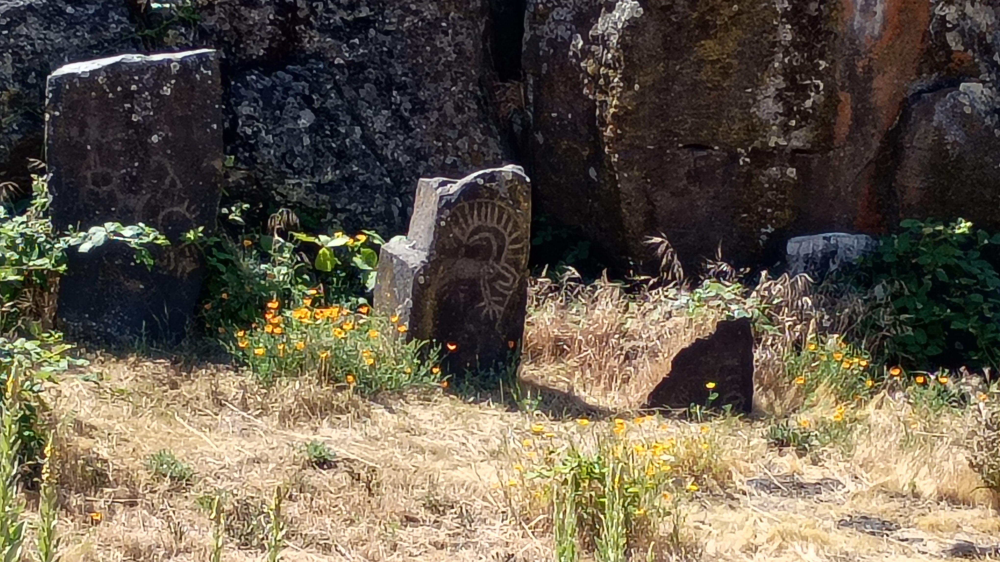
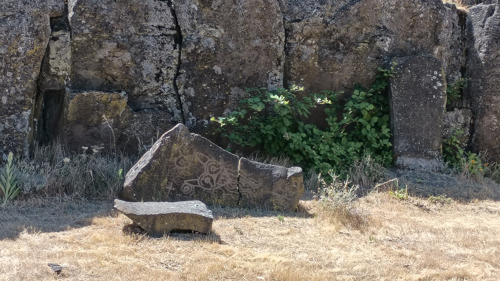
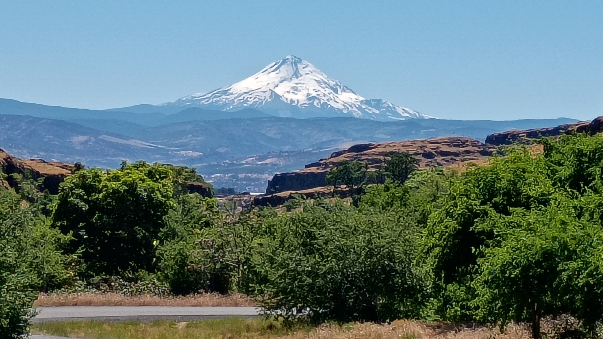
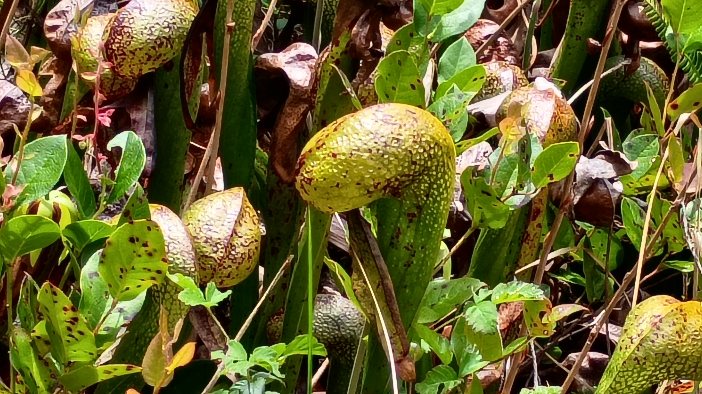

02 June 2026
Rejected Shakespeare: Once more unto the breach, motherfuckers, once more!

03 June 2026
genx shakespeare: to be, or not to be, that is the question. whatever.
05 June 2026
Rode to the valley. Felt warm rain for the first time in years. Bliss. #itsGettingBoringByTheSea
07 June 2026
There's something unnerving about a bird chilling in your yard at two in the morning . . .

08 June 2026
Worked on the site's accessibility. Think I did better? Possibly?
WAVE says better. AccessiblityChecker says better. Skynet says I suck, but why would I believe them when they're just going to unleash terminators upon the world and destroy us all? They can't fool me. Terminators don't care about accessibility.
09 June 2026
I was introduced to a new volunteer today. They said they recognized me. Said they've seen me working with patrons who had tech problems. Asked if I did anything besides that.
Told them I was a reference librarian. Tech help was only one of the things I did. Got interrupted by a patron nearby. Asked if I hack.
I asked them if they said hack.
They said they said hack.
Was going to ask them what they thought hacking was. Thought better of it. Informed them that the library does not offer hacking services.
They asked me if I knew anybody who did.
I told them I was afraid I did not.
10 June 2026
Possibly too much information. Click/Tap here at your peril.
When you're cruising through the grocery store and find a package of Betty Crocker Favorites Fudge Brownie Mix on sale for $1.29 and then accept a bet that you can make the brownies and eat them all in one night, and, despite the long odds, win that bet, do not, in any way, be surprised if, when you eventually poo, that it looks, basically, like Betty Crocker Favorites Fudge Brownies.
11 June 2026
'This history mustn't be forgotten': The real story behind the Nuremberg trials (BBC News, 2025. Clare McHugh. Archive.org capture.)
It was there that the psychiatrist, Douglas M Kelley, spent hours interviewing Göring, and administering psychological tests.
The doctor's own ambition was to identify among the Nazis a shared psychosis or particular derangement, because only that, he believed, could account for their monstrous acts. Yet after intense study, Kelley conceded the men were fundamentally opportunists who had grabbed the chance to exercise power and exploit others. "And he concluded there have always been people like this, although the atrocities they commit are much smaller," says El-Hai.
The question of collective national guilt was one that Kelley pondered for years afterwards, according to El-Hai. "And he was on guard back in the United States for incipient fascism. He was suspicious of politicians, especially populists in the south who played on racial segregation to assemble power."
12 June 2026
Breakthrough Starshot (Wikipedia. Archive.org capture. Further reading)
Breakthrough Starshot was a research and engineering project by the Breakthrough Initiatives program to develop a proof-of-concept fleet of light sail interstellar probes named Starchip, to be capable of making the journey to the Alpha Centauri star system 4.34 light-years away.
A flyby mission was proposed to Proxima Centauri b, an Earth-sized exoplanet in the habitable zone of its host star, Proxima Centauri, in the Alpha Centauri system. At a speed between 15% and 20% of the speed of light, it would take between 20 and 30 years to complete the journey, and approximately 4 years for a return message from the starship to Earth.
~
The builder who photographed distant galaxies (BBC News, 2025. Neil Prior. Archive.org capture. Image)
.jpg){kind=link}
On 29 December 1888, Isaac Roberts was the first person to take a clear image of our nearest large galaxy, Andromeda, 2.5 million light years away.
~
A 5.3-million-year-old deep-sea whale necropolis in the Diamantina Zone (Nature, 2026. Peng, X., Zhou, P., Song, X. et al.. Archive.org capture. DOI)
Here we report the discovery of a vast whale necropolis in the Diamantina Zone (4,616- to 7,001-m depth), extending about 1,200 km along the sea floor of the southeastern Indian Ocean. This area has a deep and extensive accumulation comprising five modern natural whale-fall communities and 476 fossil cetaceans recorded. We show that carcasses host specialized communities dominated by brittle stars, bone-boring worms and chemosynthesis-based bivalves and that the fossil record in this area comprises both extant and extinct deep-diving beaked whales. Isotopic dating shows that whale falls in this region have occurred since at least 5.3 million years ago.
13 June 2026
Trip to Columbia Hills Historical State Park. Wikipedia link. Petroglyphs and nifty views of the Columbia River and Mt. Hood. Had to drive trhough Skamania County, Washington to get there. Are people from Skamania County called Skamaniacs?




14 June 2026
Trip to Darlingtonia State Natural Site. Wikipedia link. Got there a bit too early as they weren't yet in bloom. Here's what they look like blooming.
Darlingtonia State Natural Site is the only Oregon state park property dedicated to the protection of a single plant species. Concurrently, the plants it protects are the only carnivorous flora in the system.


15 June 2026
Eagle chilling in the backyard looking for lunch back in 2020.


See how impressive these photos aren't? They're the exact opposite of how actually unbelievably impressive the actual experience was.
Actually.
I was reading on the backyard deck during COVID. The deck faces a forest. Suddenly, I heard all the birds in the area making lots of noise. I looked up to see the bald eagle chilling in the tree. Birds dive bombed it, screeched at it, but it sat unperturbed. I watched for about fifteen minutes then Stacy came out for a peak, took these two pics, said, "neat," and, "cute dear," then went back inside.
Me? I had been taking photo after photo and video after video . . .
. . . and I hadn't even noticed the deer.
After about thirty more minutes the eagle got bored and flew off.
Without the deer.
That night my phone broke right good. I don't back up my media automatically to the cloud and hadn't yet backed up the photos to my laptop.
I lost them all, but Stacy still had these two pics.
Neat.
16 June 2026
Been working on Bryan Byun's Archive site. Many memories. Found when he endorsed me for president and when he gave me one of his designs.
~
Dialogue:
"You always have that 'fuck you face' look going on."
"Yeah?"
"Why is that?"
"Cuz fuck you, that's why."
- fin -
~
Ugh! Ewww! OMG!!! There's a manager, working the circ desk, telling patrons, when they ask how he's doing, that he has a rash, before going on to describe, in great* excruciating detail, the particulars of said rash.
And, after reading that sentence out loud to myself, I got a little breathless.
*"great" is not a word that should be used here . . . at all . . . ever.
17 June 2026
Saw another Transalp in the wild today. Was neat-o. Chit-chatted at a traffic light.
~
Dialogue:
"I don't believe in the devil."
"Huh. The devil believes in you."
- fin -
20 June 2026
Dialogue:
"I'm an 'all or nuthin' kinda guy."
"You dropped out of school, own only what's in that backpack you're carrying, and live under this bridge."
"Yeah, it's mostly nuthin."
- fin -